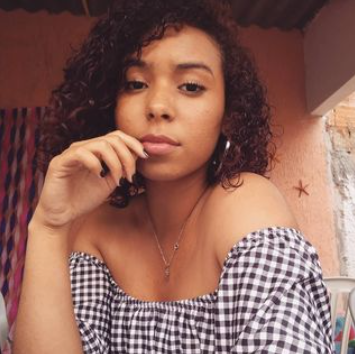

Sobre mim

Olá, me chamo Gracielle, tenho 21 anos, estou morando em Brasília atualmente. Sou ilustradora e no momento estou migrando para a área de Desenvolvimento Web, o front-end me agrada bastante, porem também quero chegar ao nível Full-Stack.
Gosto muito de estar sempre apreendendo coisas novas, e testando elas no meu dia a dia.Tenho feito o desafio Jornada DEV, o objetivo é estudar e colocar em pratica tudo que venho aprendendo em 52 semanas. Esse site, foi feito na primeira semana do desafio!